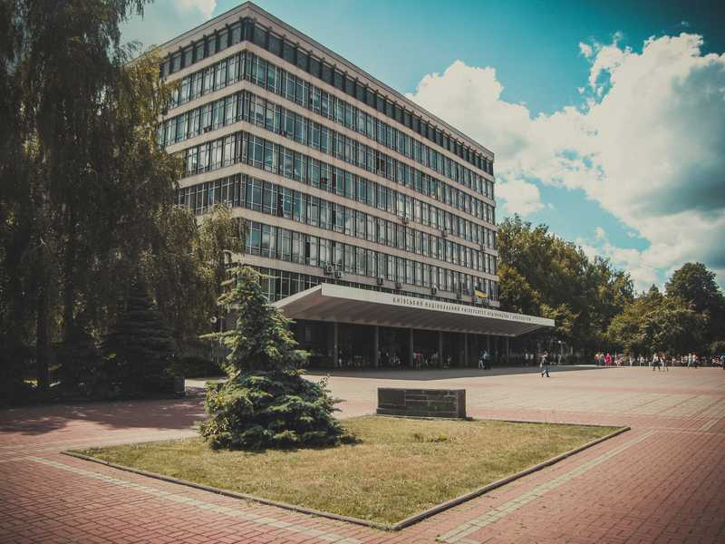
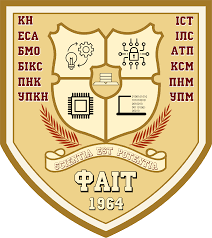

Мене зовуть Кірієнко Кирило. Я навчаюся в Київському Національному Університеті Будівництва і Архітектури на бакалавраті.
Мені подобається програмувати різні програми, писати сайти та розбиратися в комп'ютерних системах та комплектуючих.
Сподіваюсь, що мої вміння та навички з наведених вище сфер уподобань будуть розвиватися тільки вгору.
Також маю надію, що отримані знання в університеті допоможуть мені в професійному житті.
 